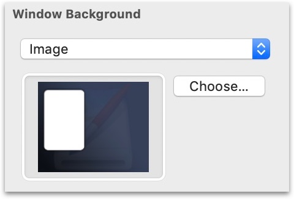
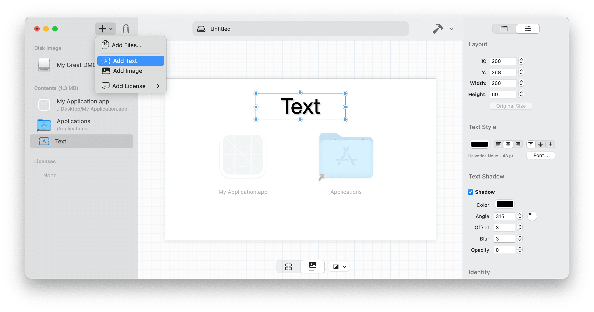

Window Background
Window Background
Creating the background of the disk image window is as easy as picking a color or setting a background image using the sidebar. But that’s not where the fun has to end.

DMG Canvas also allows you to drag and drop images onto the Background view, as well as add text objects in order streamline the design process. Instead of having to switch back and forth between two different programs designing the background image and testing it in DMG Canvas, you can drop in pieces of the background and fine tune the layout right inside the Background view. DMG Canvas will automatically composite the layout from the Background view into the background image for the Finder window.
To change the font, size, and color of text objects in the Background view, double-click on it, select the text, and use the standard Font and Color panels (see the Text menu) to style the text.

Retina Background Support
To make sure your disk image background looks as sharp and spiffy as possible, make sure any images you supply are “Retina-ready”. Use images that are twice the resolution of their on-screen number of points to be Retina. If your window size is 800 x 500, then make a background image that is 1600 x 1000 pixels big. When your disk image is built, the background image, additional images, and any text objects you add to the background will be all be rendered into a crisp Retina-ready background image.